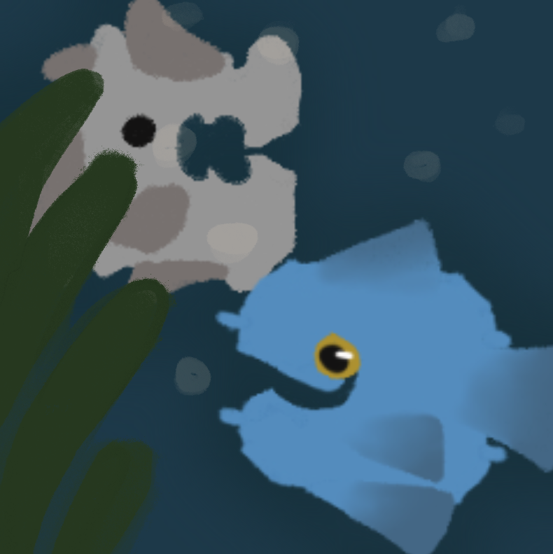

PANISH!

Panish is a fun Roku screensaver inspired game that I made the summer of 2024.
I have never had a place to post it because .exe files
immediately get flagged on 90% of all websites so I couldn’t really share it anywhere.
All of it is coded/illustrated by me.
For each of the four game modes there are 6-13 different animals to spot, each one
with their own speed and arrival time based on the animal in real life. Three of the
four game modes are based off aquatic biomes and the fourth is a forest. The forest,
unlike the other three, does not have panid inspired animals in it!
Game Modes
Reef
The "Reef" game mode is inspired by
real life coral reefs. This game
mode contains 13 animals;
the Lemon Sea Slug, Sea Snail,
Sand Dollar, Blue Crab,
Tinted Lion Fish,
Flashy Purple Fish,
Yellow Cored Jellyfish, Pink Sunfish,
Schooling Purple Fish(The Swarm),
Black Tip Reef Shark,
Speckled Stingray, Cloudy Eel, and
the Glow Stick Catfish.
Deep
The "Deep" game mode is inspired by
deep oceans. This game mode contains
11 animals;
the Sea Urchin,
Dark Sea Cucumber, Crab, Blue Fish,
Gold Fish, Silver Fish, Dark Fish,
Salmon, and the Velvet Shark.
Deepest Deep
The "Deepest Deep" game mode is
inspired by the deepest corners
of oceans. This game mode
contains 6 animals;
the Japanese Spider Crab,
Saw Toothed Blue Fish, Blob Fish,
Olm, Isopod, and the Lantern Fish.
Forest
The "Forest" game mode is inspired
by forests. This game mode
contains 11 animals;
Lily, Fox, Skunk, Bunny,
Garter Snake, Copperhead, Blue Jay,
American Robin, Red Shouldered Hawk,
Northern Cardinal,
and the Little Brown Bat.
Made by fooxxo.